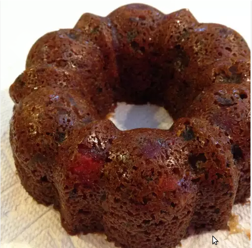

Christmas Cake Recipe

Christmas Cake
Make your season merry with this old-fashioned Christmas cake.
Full of brandy-soaked fruit and cozy spices, this Christmas cake
recipe will quickly become a family tradition.
- candled, dried, and fresh fruits
- nuts
- brandy
- flour
- spices and seasoning
- baking soda
- molasses and apple juice
- 1 cup unsalted butter
- brown Sugar
- 6 eggs
- Soak the fruit in brandy overnight
- Dredge the soaked fruit in 1/2 cup flour
- Mix the remaining flour with the spices, baking soda, and salt. Stir in the molasses.
- In a separate bowl, cream the butter. Blend in brown sugar and eggs.
- Gradually add the dry mixture to the wet mixture. Fold in the fruit.
- Pour the batter into the prepared pan until a toothpick comes out clean.